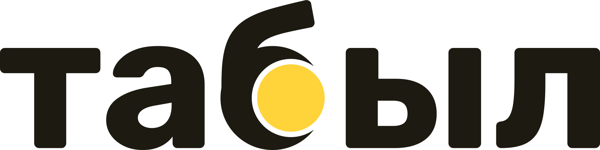
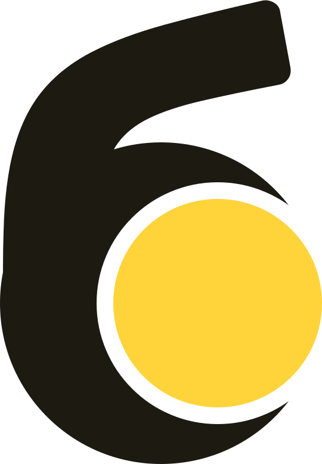
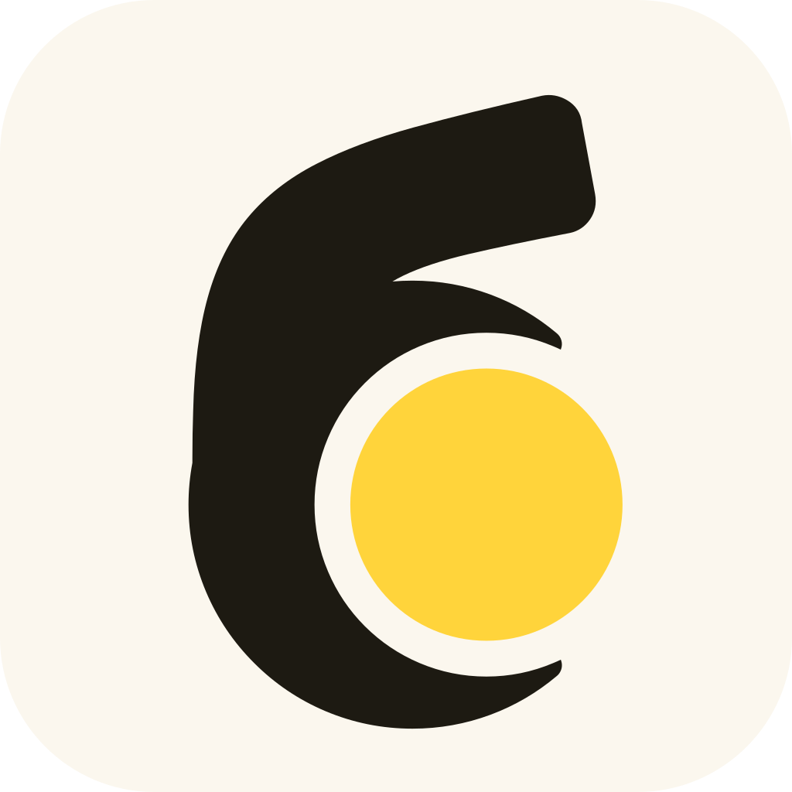
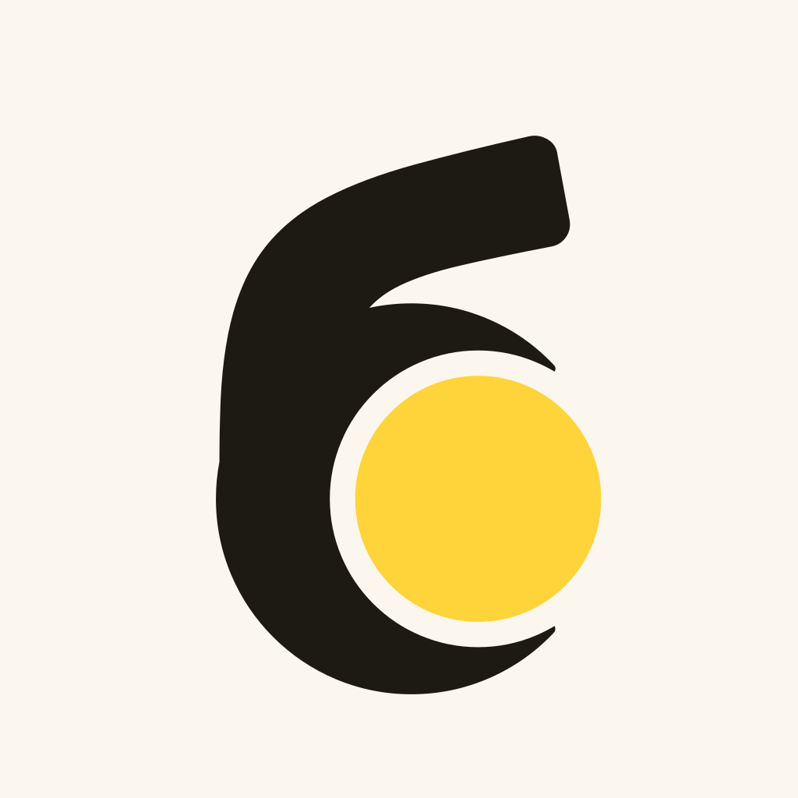
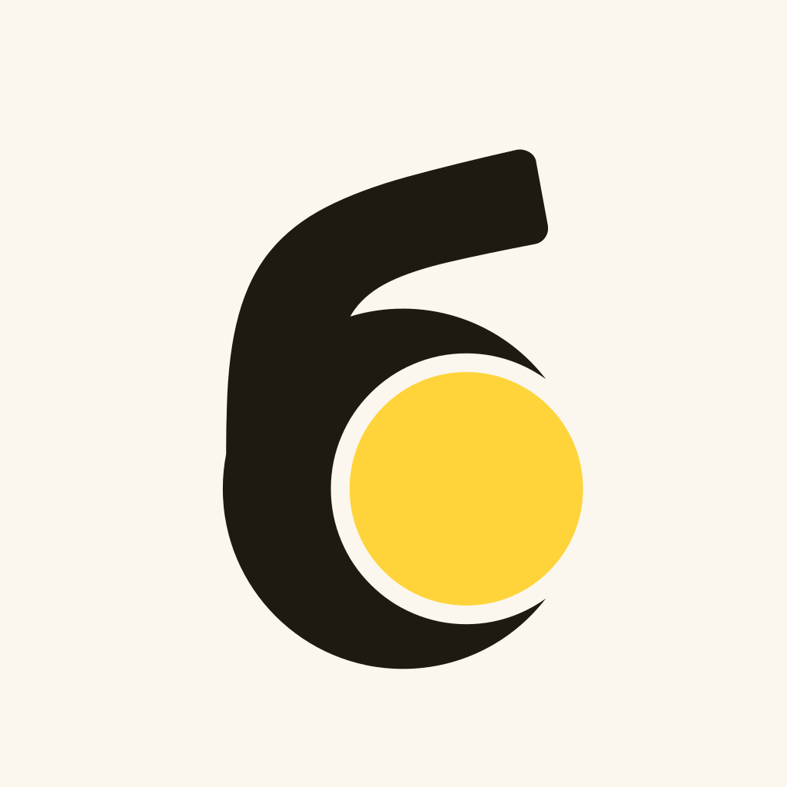
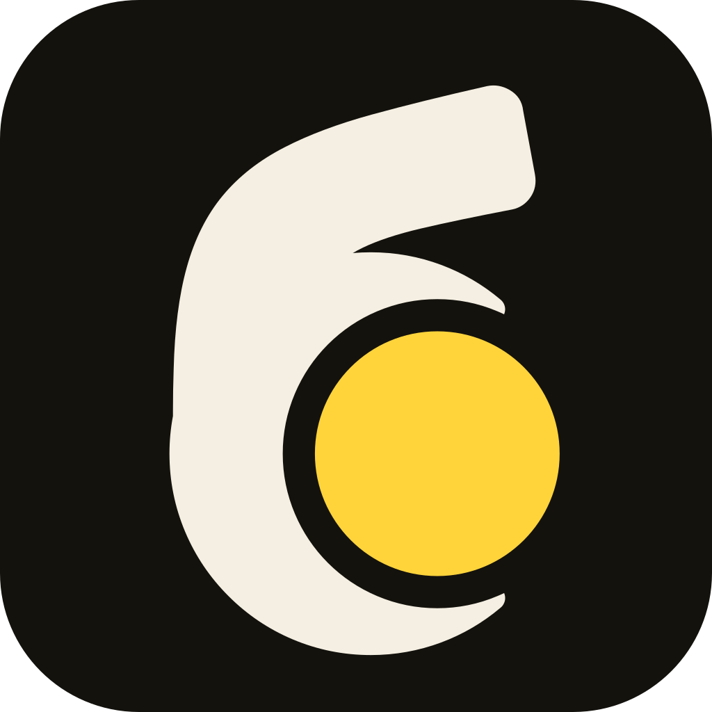
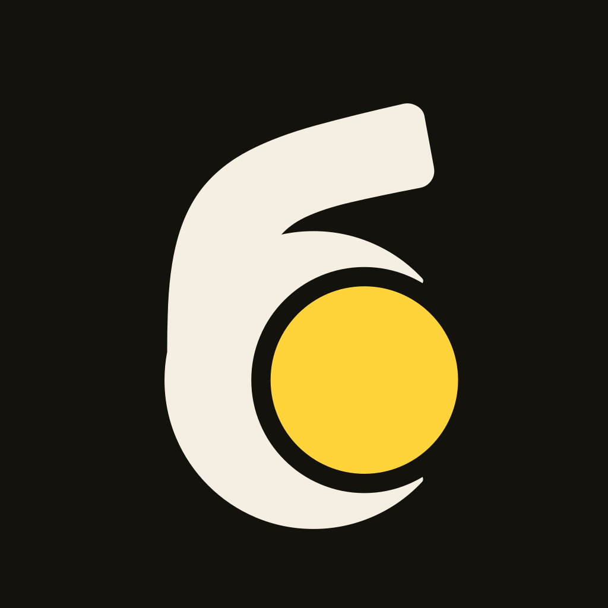
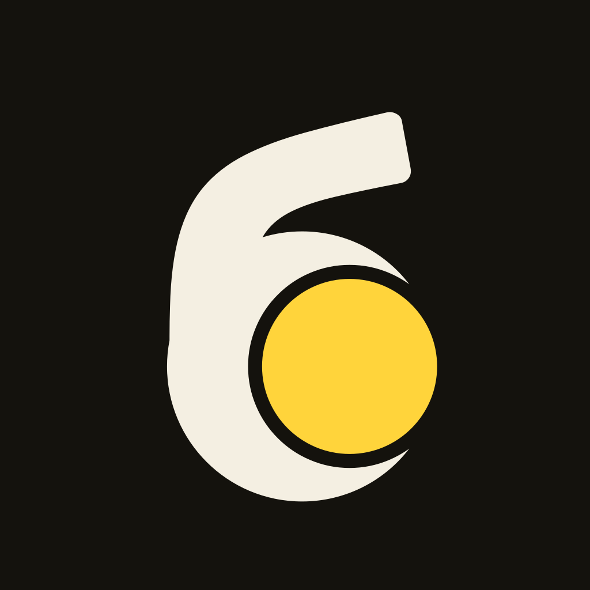

Буква «б», в чашечке которой встаёт солнце. Вся надпись собрана из настоящих контуров шрифта Rubik Bold, а «б» нарисована заново по его пропорциям. Для мелких размеров есть отдельные версии: в 16 и 32 пикселя солнце не сливается с буквой ни на светлом, ни на тёмном фоне.









tabyl-wordmark.svg — надпись для светлого фонаtabyl-wordmark-on-dark.svg — для тёмногоtabyl-wordmark-mono.svg — одним цветом (currentColor)tabyl-mark-large / medium / small.svg — знак в трёх размерахicon-*.svg — иконки приложения, светлые и тёмныеicon-maskable.svg — для Android с безопасной зонойfavicon.svg — сам переключается под тёмную тему браузераpng/ — favicon 16, 32, 48; apple-touch-icon 180; 192; 512